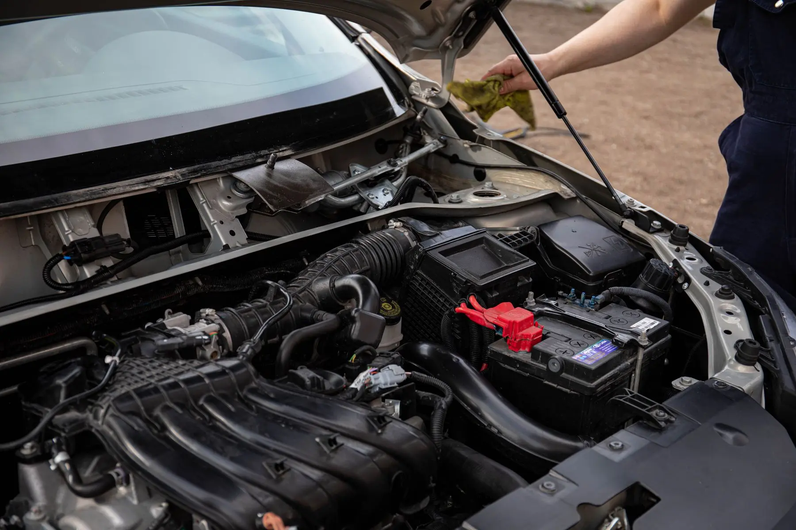
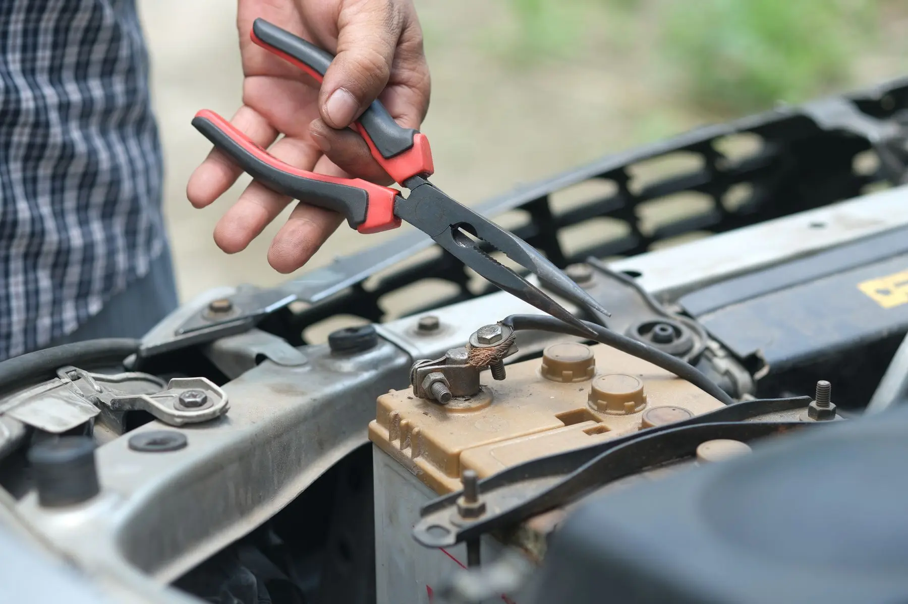

WHAT'S INCLUDED
BATTERY TESTING VS. REPLACEMENT.
- Battery testing request
- Battery replacement request
- Vehicle and location details
- Preferred appointment date/time
MECHANIC
Tires 4 Less offers Battery Testing & Replacement through its Charlotte and Concord shops. If the vehicle will not start away from the shop, 24/7 Roadside Jump Starts use (980) 319-0381; shop-based battery testing and replacement use the Service Request.
Choose your preferred Tires 4 Less shop. For an immediate no-start situation away from the shop, use 24/7 Roadside.
WHAT'S INCLUDED
Battery Testing & Replacement for planned shop service. For a no-start away from the shop, use 24/7 Roadside.
SERVICE DETAILS
Battery Testing & Replacement is a planned shop-service path. A Jump Start is part of 24/7 Roadside Assistance when the vehicle will not start away from the shop. A successful jump does not by itself prove the battery is healthy, and a slow or no-start condition can have causes other than the battery, so shop testing is the appropriate next step when the battery condition needs to be evaluated.
SERVICE DETAILS
If the vehicle can come to the shop, choose the location and request Battery Testing & Replacement. If the vehicle will not start where it sits, call 24/7 Roadside at (980) 319-0381 for a Jump Start path. After the immediate situation is handled, the shop-service request can be used for testing or replacement if needed.
SERVICE CONTEXT
If the vehicle is stranded and will not start, Roadside Jump Starts are the immediate mobile-help path. Battery Testing & Replacement is the planned shop path for evaluating the battery condition and replacing it when appropriate. A jump start can get the vehicle moving without proving what caused the no-start.
After the immediate issue is handled, send the vehicle information and preferred shop for Battery Testing & Replacement. If the vehicle cannot be moved safely, keep the request in the Roadside/Towing system instead of treating it like a normal appointment.
SERVICE VISUALS
Follow the service from the main vehicle view through two supporting work details, keeping the process easy to scan before you request service.

BATTERY / VEHICLE
TESTING / TERMINALSHOW IT WORKS
Select the Tires 4 Less shop for BATTERY TESTING & REPLACEMENT.
Include the vehicle and the details that explain what you need.
Send a preferred date and time. The appointment is confirmed only when the shop responds.
COMMON QUESTIONS
Testing evaluates the battery condition; replacement is the next step only when the specific vehicle and battery situation support it.
Use 24/7 Roadside Jump Starts at (980) 319-0381.
No. Different issues can cause a no-start or slow-start condition, so testing is appropriate.
Yes. Use the Shop Service request for Battery Testing & Replacement.
READY?
Choose the location, send your vehicle details and tell us your preferred time.
START SERVICE REQUEST